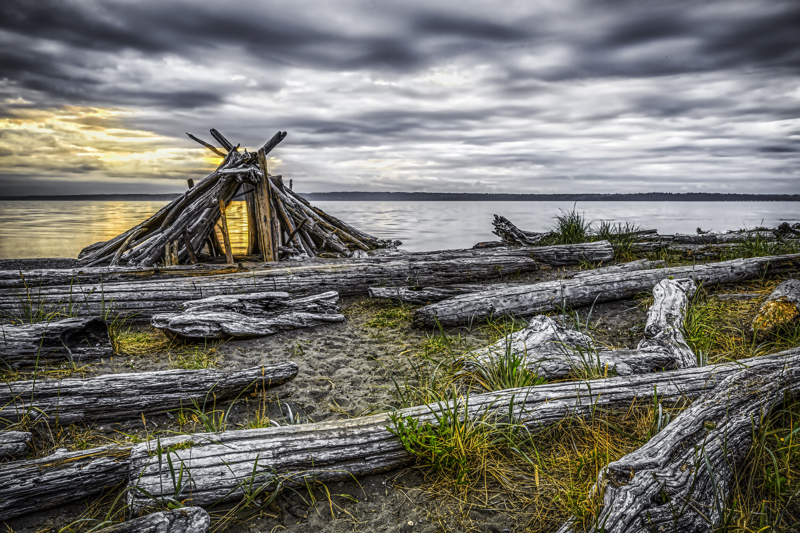
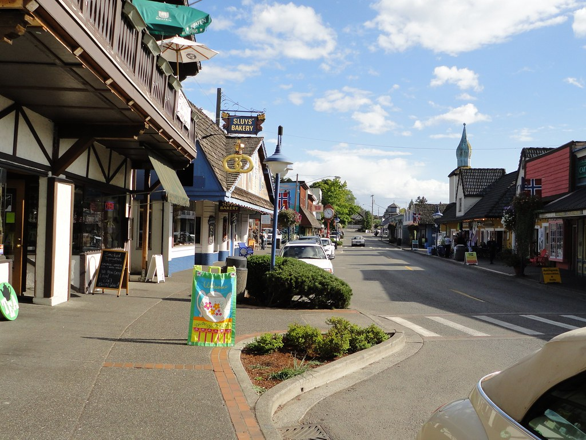
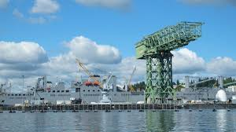
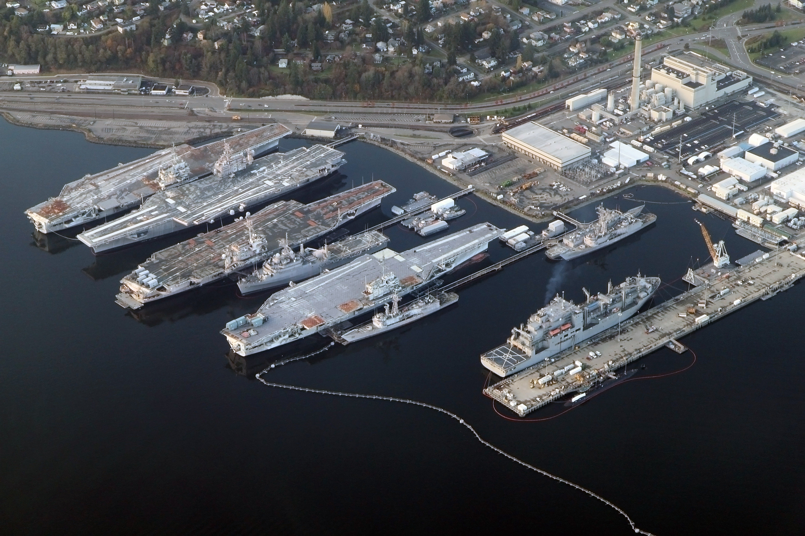
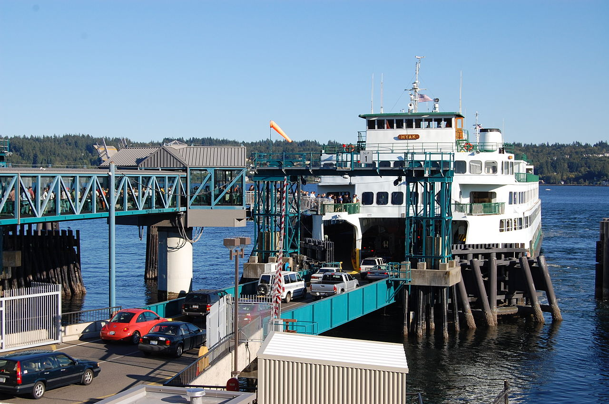
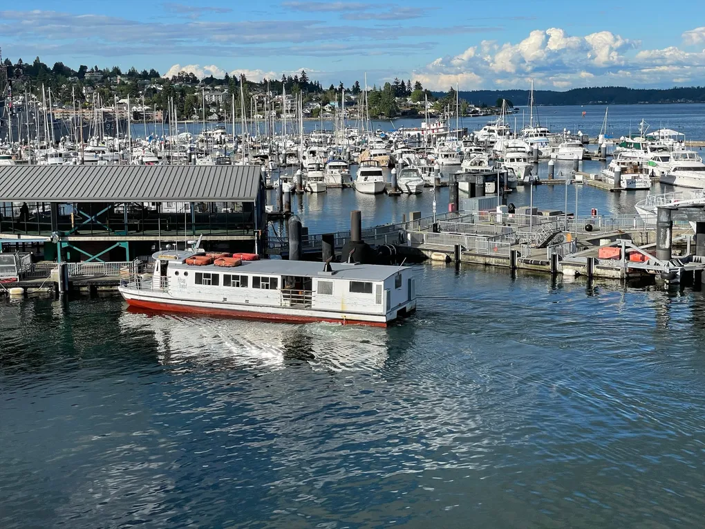

Kitsap Highlights

Outdoor Adventures
Hiking trails, kayaking spots, and scenic parks.

Charming Towns
Explore Poulsbo, Port Gamble, and more.

Local Culture
Museums, art galleries, and historical sites.

Did You Know?
Kitsap County is home to the world's largest Naval Base on the West Coast, the Puget Sound Naval Shipyard, a significant historical and operational site!

Local Tip!
For a unique experience, take the foot ferry from Bremerton to Seattle and enjoy the stunning Puget Sound views on your way to the city.

Waterfront Charm!
Stroll along the lively Port Orchard waterfront, browse unique boutiques, and enjoy fresh seafood with beautiful views of Sinclair Inlet.